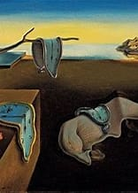

Similar works of Salvador Dalí

Author

This painting, from Salvador Dalí's Paranoiac-critical period, exemplifies his mastery of double images—a hallmark of his innovative "paranoia-critical method." Introduced in his 1935 essay The Conquest of the Irrational, this method involves a "spontaneous method of irrational understanding based upon the interpretative critical association of delirious phenomena." Dalí employed it to evoke hallucinatory forms, visual illusions, and layered imagery, which defined much of his most creative decade, the 1930s.
In Swans Reflecting Elephants, as with his earlier work Metamorphosis of Narcissus, Dalí uses the reflection in a lake to craft the double image central to the composition. The swans' necks, bodies, and the barren trees behind them transform in their reflection into the trunks, ears, and legs of elephants. Set against a vivid Catalan landscape of fiery autumn hues, the swirling cliffs contrast with the serene water, enhancing the surreal and dreamlike atmosphere of the painting.